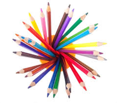

Katherine Genuario
Hi, my name is Katie
About Me
I am a 3rd year student at the University of Virgnia studying Systems and Information Engineering with a concentration in human factors and business. I am interested in learning more about user experience design and data analytics. I enjoy traveling, trying new foods, exploring art museums, hiking, and snowboarding.
My Work
Research
In the Human Machine Interface and Haptics Lab of the Systems Engineering Department at UVA, I am helping design the user interface of a web and mobile application of a electrical torque measuring knee brace device. The interface allows doctors and nurses to view, track, and compare measurement data in order to make better decisions for rehabilitation and surgery. I am learning basic wireframing techniques and appling concepts from human factors engineering.
Engineers Going Global
I am a member of Project Armenia, a student run multidiscplinary group of engineers and architects whose goal is to help design and implement earthquake resistant sustainable structures in Gyumri, Armenia to provide proper shelter and aid to natives who were displaced by the 1988 earthquake that killed over 30,000 people. We are partnered with UVA and Armenian NGOs. Our team travelled to Armenia in May 2016.
Other Projects

I enjoy working random creative projects. Everything from painting, pottery, to cooking my own ravioli. Maybe eventually I will upload these projects and designs here.